For the object returned by pump_power(), visualizes different definitions of power across MTPs. For the object returned by pump_mdes() or pump_sample(), plot a power curve as a function of MDES or sample size, respectively. This latter call will calculate power over a passed range from low to high to generate this curve.
Several of the passed parameters only apply to the mdes or sample versions, and are for controlling the grid search and plot.
For pump_power, will include standard errors of uncertainty on calculated power. These depend on number of iterations (tnum) used in the simulation.
Usage
# S3 method for class 'pumpresult'
plot(
x,
type = "power",
all = TRUE,
low = NULL,
high = NULL,
grid.size = 5,
breaks = grid.size,
include_SE = TRUE,
...
)Arguments
- x
pumpresult object.
- type
string; "power" or "search". Specifies whether to plot the default power graph, or the search path. The search path is only valid for MDES and SS results.
- all
Logical. If TRUE, merge in the search path from the original search to the estimated power curve, for MDES or sample plots.
- low
Low range of x-axis and curve calculation for sample or MDES plots. (Optional.)
- high
High range of x-axis and curve calculation. (Optional.)
- grid.size
If calculating curve for sample or MDES plot, how many grid points?
- breaks
If plotting a curve for sample or MDES, where to put the grid points?
- include_SE
Include (approximate) SEs on the power estimates, if they are naturally calculated.
- ...
additional parameters, such as, in case of sample or mdes objects, tnum for setting number of replicates or all (logical) for determining whether to include original points in the estimated curve, or include.points (logical) for including points on the plot itself.
Examples
pp1 <- pump_power(d_m = "d2.2_m2rc", MTP = 'HO',
nbar = 50, J = 20, M = 8, numZero = 5,
MDES = 0.30, Tbar = 0.5, alpha = 0.05, two.tailed = FALSE,
numCovar.1 = 1, numCovar.2 = 1, R2.1 = 0.1, R2.2 = 0.7,
ICC.2 = 0.05, rho = 0.2, tnum = 200)
plot(pp1)

J <- pump_sample(d_m = "d2.1_m2fc",
MTP = 'HO', power.definition = 'D1indiv',
typesample = 'J', target.power = 0.6,
nbar = 50, M = 3, MDES = 0.125,
Tbar = 0.5, alpha = 0.05,
numCovar.1 = 1, R2.1 = 0.1, ICC.2 = 0.05,
rho = 0.2, tnum = 500)
#> Warning: Number of final iterations (2000) not up to specified tolerance (0.01).
#> Warning: Reached maximum iterations without converging on estimate within tolerance.
#> See sample size vignette for suggestions.
plot(J)

plot(J, type = "search")
